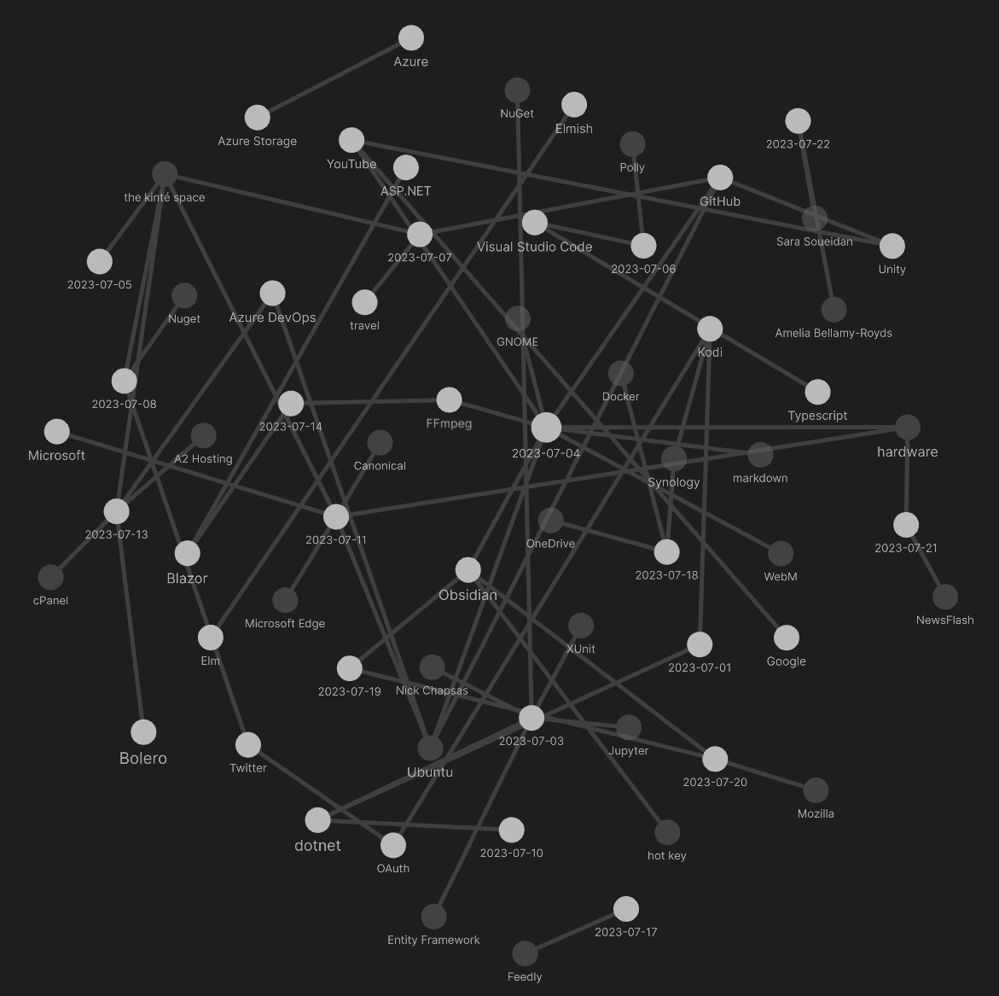
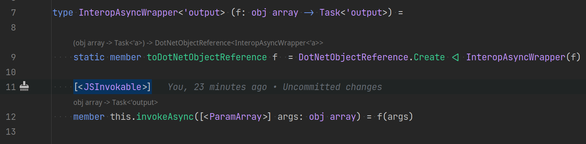
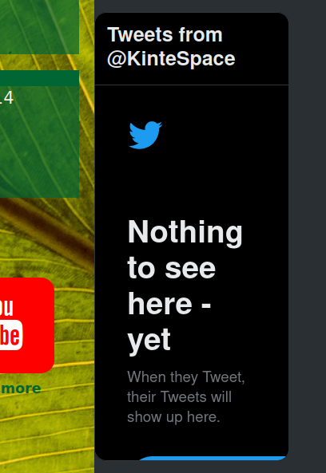
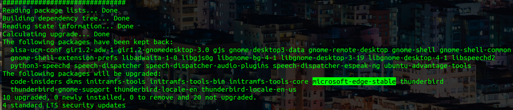
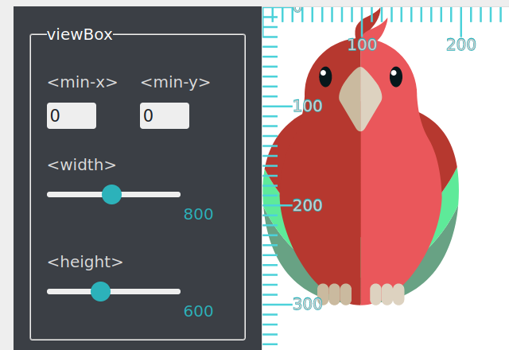

studio status report: 2023-07
month 07 of 2023 was about almost finishing the Songhay.Player.ProgressiveAudio project one last time
My report for last month did not mention that songhay release 0.3.5 📦🚀 [GitHub] was released in month 06. Mentioning this makes the completion of Songhay.Modules.Bolero release 6.3.0 📦🚀 [GitHub] in month 07 line up with an actual plan. The fact that Songhay.Player.ProgressiveAudio release 6.0.0” [GitHub] is still incomplete makes even me think, Do I have a plan to actually get this done?
The leading cause of my delays are new discoveries in the Studio. My selected Obsidian notes below should reveal that my relationship with SVG has vastly improved. This is a discovery that allows me to take great steps forward. The other kind of Studio discovery makes me take steps backward—and that is what a emergency dependencies release like Songhay.Modules.Bolero release 6.3.0 📦🚀 [GitHub] represents.
selected Obsidian notes

[[Songhay Modules Bolero (F♯)]]: yes, it is all working but…
…centralizing a [<JSInvokable>] method in a dedicated class like this:

…does not work when we are expecting the state of f to change ‘by reference’ which is why I do not recommend using a type like this even though it has been recommended by others.
day job report: flippant remarks about [[Entity Framework]]
- make the repository connection string
internaland visible to relevant test projects - to avoid going to full-blown SQL Server Integration Services, use an [[XUnit]] test class (with
Skipattributes) to retrieve data in hierarchical entities to be saved as a JSON ‘tree’ 🌳 - load a JSON ‘tree’ 🌳 in a test method, hydrate the tree into hierarchical entities and use a LINQ
Flattenroutine toDELETEany existing data on the target database for anINSERT(this approach should be documented in a [[Jupyter]] notebook #to-do) - take advantage of
DbSet<TEntity>.Add(TEntity)[📖 docs ] to auto-generate theINSERTstatements needed - do not use
DbSet<TEntity>.Find[📖 docs ] andDbSet<TEntity>.Remove[📖 docs ] to delete an entity; useRelationalDatabaseFacadeExtensions.ExecuteSqlRaw[📖 docs ] instead
day job report: the minimum needed for [[Songhay Activity]] functionality
The following seven files need to be explored in, say, a [[Jupyter]] notebook for the sake of documentation #to-do :
| file | location | remarks |
|---|---|---|
IActivity.cs |
GitHub | synchronous Start based on ProgramArgs |
IProgramAssemblyInfo.cs |
GitHub | interface to assembly metadata |
IActivityExtensions.Lazy.cs |
GitHub | features the GetActivity method for the ‘Activity Getter’ |
ProgramArgsExtensions._.cs |
GitHub | centralizes routines for argument and command-line help text handling |
ActivitiesGetter.cs |
GitHub | lazy-loads Activities into memory |
ProgramArgs.cs |
GitHub | conventional command-line arguments |
ProgramAssemblyInfo.cs |
GitHub | conventional assembly information for display text |
[[F♯]]: a video questioning the awesomeness of Result<,_>

In Defense of Exceptions: Throw away your Result (Roman Provazník)
[[the kinté space]]: [[Twitter]] frame is dead?
Is this just temporary or just more of the end❓

yes, [[Microsoft Edge]] was broken yesterday…
…and today it looks like it was fixed:

I assume the [[Canonical]] people broke something the [[Microsoft]] people depended on. And, because I blindly update [[Ubuntu]] every day with ucaresystem-core, there was a day or two of inconvenience.
SVG experiments in [[Obsidian]]?
The short answer is yes. This is the ‘naïve’ 96-24 circular button:
<button style="width:96px; height: 96px; border-radius: 96px; border-width: 0; padding: 0;">
<svg width="96" height="96">
<polygon fill="orange" points="24,0 96,48 24,96" />
</svg>
</button>
This is the 96-24 circular button with an svg.viewBox:
<button style="width:96px; height: 96px; border-radius: 96px; border-width: 0; padding: 0;">
<svg width="96" height="96" viewbox="-40 -50 180 190">
<polygon fill="orange" points="24,0 96,48 24,96" />
</svg>
</button>
In this design, the viewBox [📖 docs ] is controlling the ‘padding’ around the arrow with respect to the button. These values are eye-balled 👀 where the -40 180 pair is regarded as pan-width values and the -50 190, pedestal-height values. The terms pan and pedestal refer to cinematic camera moves.
Now I will try to scale down this 96 button to a 64 button:
<button style="width:64px; height: 64px; border-radius: 64px; border-width: 0; padding: 0;">
<svg width="64" height="64" viewbox="-40 -50 180 190">
<polygon fill="orange" points="24,0 96,48 24,96" />
</svg>
</button>
What about a 32:
❓
<button style="width:32px; height: 32px; border-radius: 32px; border-width: 0; padding: 0;">
<svg width="32" height="32" viewbox="-40 -50 180 190">
<polygon fill="orange" points="24,0 96,48 24,96" />
</svg>
</button>
This experiment shows that SVG polygon.points do not need to be changed when ‘scaling’ because of a single svg.viewBox setting. This is wonderful! However, the scaling strategy described here requires all of these values to be changed to the same quantity:
- button
widthstyle - button
heightstyle - button
border-radiusstyle svg.widthsvg.height
more SVG experiments in [[Obsidian]]
[[2023-07-19#SVG experiments in Obsidian ?|Yesterday]], I showed myself how important svg.viewBox is. But I also see that about 5 settings are needed to ‘scale’ an SVG inside of a container like a button.
However, [[Songhay Dashboard (F♯, C♯)]] is out there in production doing stuff like this:
![[[Songhay Dashboard (F♯, C♯)]] SVG(../../image/day-path-2023-07-30-11-24-27.png)
[!question] Is
preserveAspectRatio="xMidYMid meet"eliminating the need to setsvg.widthandsvg.height?
Let’s start with this:
<button style="width:96px; height: 96px; border-radius: 96px; border-width: 0; padding: 0;">
<svg width="96" height="96" viewbox="-40 -50 180 190">
<polygon fill="orange" points="24,0 96,48 24,96" />
</svg>
</button>
Now, let’s replace two svg attributes with one preserveAspectRatio="xMidYMid meet":
<button style="width:96px; height: 96px; border-radius: 96px; border-width: 0; padding: 0;">
<svg preserveAspectRatio="xMidYMid meet" viewbox="-40 -50 180 190">
<polygon fill="orange" points="24,0 96,48 24,96" />
</svg>
</button>
Does this really mean the answer to our question is yes?
Now, according to the [[Mozilla]] docs for preserveAspectRatio the setting above, "xMidYMid meet", is the default—this means we could do this:
<button style="width:96px; height: 96px; border-radius: 96px; border-width: 0; padding: 0;">
<svg viewbox="-40 -50 180 190">
<polygon fill="orange" points="24,0 96,48 24,96" />
</svg>
</button>
So it must be svg.viewBox doing all of the heavy lifting! It follows that the answer to our question is no—but the default preserveAspectRatio helps.
I think I understand why I have preserveAspectRatio explicitly set in production: I am an old man 👴 that still does not trust modern browsers!
This experiment shows that only three values need to be changed for my SVG scaling recipe:
- button
widthstyle - button
heightstyle - button
border-radiusstyle
The great news is that all of these values are set in CSS.
[[Sara Soueidan]]: back in 2014 I am sure I read Sarah’s introduction to viewPort
I assume that “Understanding SVG Coordinate Systems and Transformations (Part 1) — The viewport, viewBox, and preserveAspectRatio” was my first introduction to viewBox—but Sarah took on the huge responsibility of introducing viewBox with a “view port” concept associated with svg.width and svg.height. This clearly has been too much responsibility for me! Today I prefer Amelia telling me to “forget” about width and height.
[!info] Sarah is trying to tell me everything while Amelia is trying to tell me to start with
viewBox.
Now I can ask the SVG question of the century:
[!question] When will my SVG-based designs require custom settings for
svg.width,svg.heightandsvg.viewBoxinstead of justsvg.viewBox? #to-do
Sarah’s viewBox demo needs to be added to the [[Songhay Dashboard (F♯, C♯)]] #to-do

the word scalable in SVG comes with complications
Every introduction to SVG graphics should come with the [[Amelia Bellamy-Royds]] article, “How to Scale SVG” which directs our attention to the key fundamental:
SVG stands for Scalable Vector Graphics. So, scaling SVG should be easy, right? Isn’t that what the SVG advocates have been saying all along, that SVG looks good at any size? It is, but yet it isn’t. SVG looks great at any scale, but it can scale in so many different ways that getting it to behave just the way you want can be confusing for SVG beginners. It doesn’t help that browsers have only recently started to adopt a standard approach to sizing inline SVG content.
The cultural reason why most technical topics in the English language are not introduced this way is because these observations are emotionally “negative”—like the following:
SVG images, in contrast, can be drawn at any pixel size, so they don’t need a clearly defined height or width. And they won’t always have a clearly defined aspect ratio. You’re going to need to explicitly provide this information (and more) if you want the SVG to scale to fit the dimensions you give it.
Expressing “don’t” and “won’t” feels negative but clarifies for me what has always unpleasantly surprised me about my work with SVG. I tend to forget the scaling issues until I can’t. In fact, it has never occurred to me that:
…SVG isn’t (just) an image. SVG is a document.
In the same manner there is a “view port” for the entire HTML document, there must be a “view port” for every SVG visual. And Amelia warns us that svg.height and svg.width are not implicitly defining an aspect ratio like what happens with raster images—more “negativity” that is much needed. Flat out she says:
…forget
heightandwidth. You don’t actually want to set the exact height and width anyway, you want the SVG to scale to match the width and/or height you set in the CSS. What you want is to set an aspect ratio for the image, and have the drawing scale to fit. You want aviewBox.
What Amelia is implying here is the key fundamental of SVG (expressed in terms of markup):
[!important] The
svg.viewBoxattribute is not optional. It should be regarded as the required way to ‘see’ the visual displayed.
The
viewBoxdoes many things:
- It defines the aspect ratio of the image.
- It defines how all the lengths and coordinates used inside the SVG should be scaled to fit the total space available.
- It defines the origin of the SVG coordinate system, the point where x=0 and y=0.
Amelia then spends the rest of her 2015 article trying to teach us to get familiar with svg.viewBox.
sketching out development projects
The current, unfinished public projects on GitHub:
- finish the “
Songhay.Player.ProgressiveAudiorelease 6.0.0” project - start the “
SonghayCore📦✨ release 6.0.5” project
The proposed project items:
- replace the Angular app in
http://kintespace.com/player.htmlwith a Bolero app 🚜🔥 - add kinté space presentations support to
Songhay.Player.YouTube🔨 🚜✨ - generate Publication indices from LiteDB for
Songhay.Publications.KinteSpace - generate a new repo with proposed name,
Songhay.Modules.Bolero.Index✨🚧 and add a GitHub Project - switch Studio from Material Design to Bulma 💄 ➡️ 💄✨